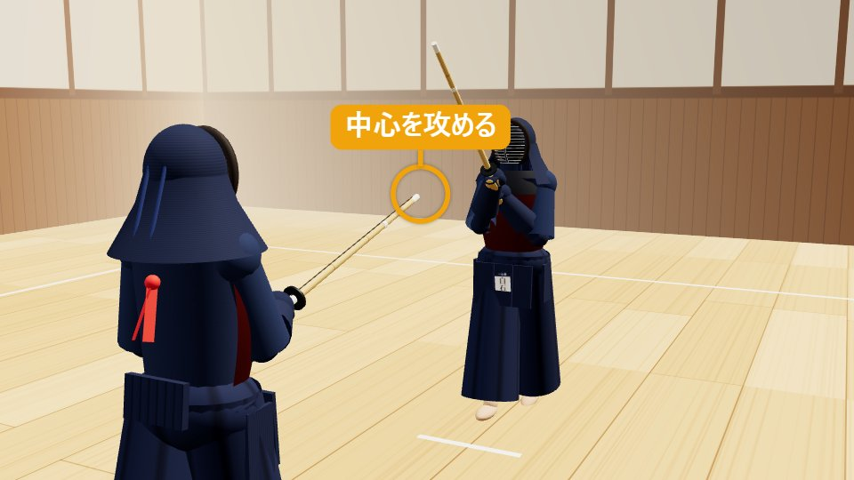
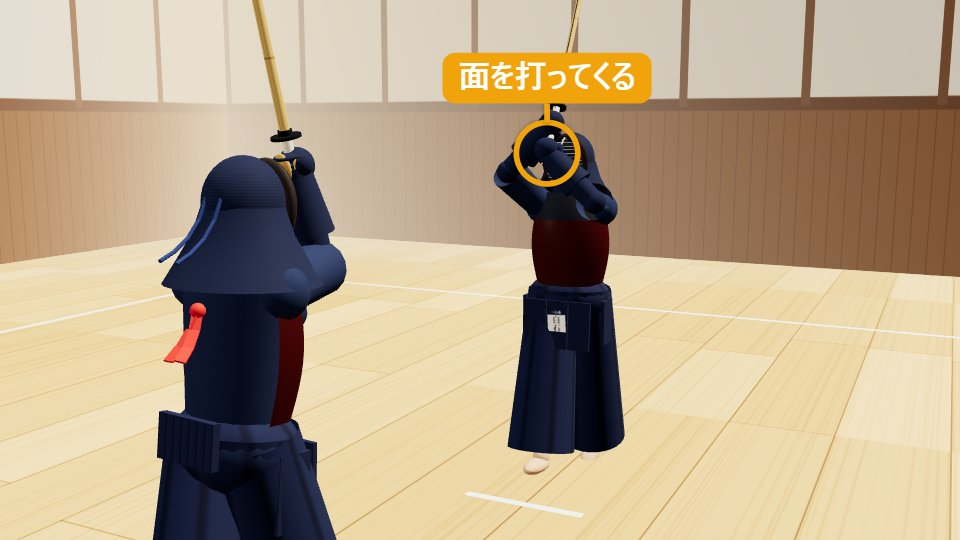
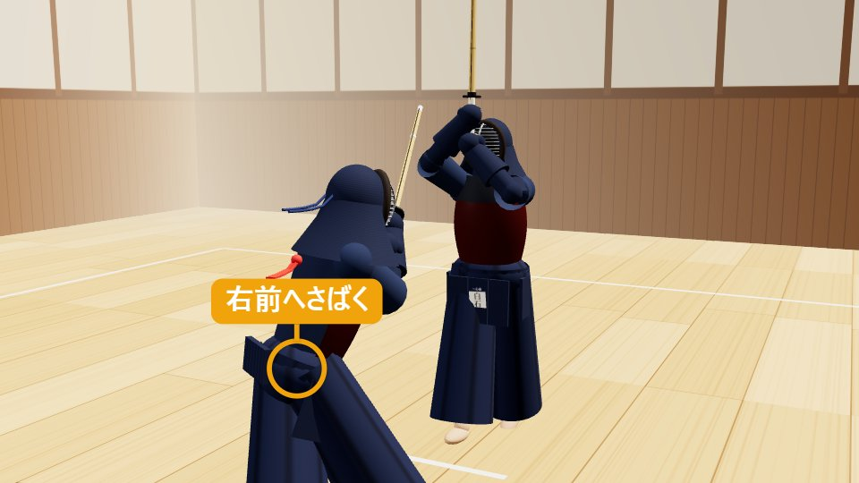
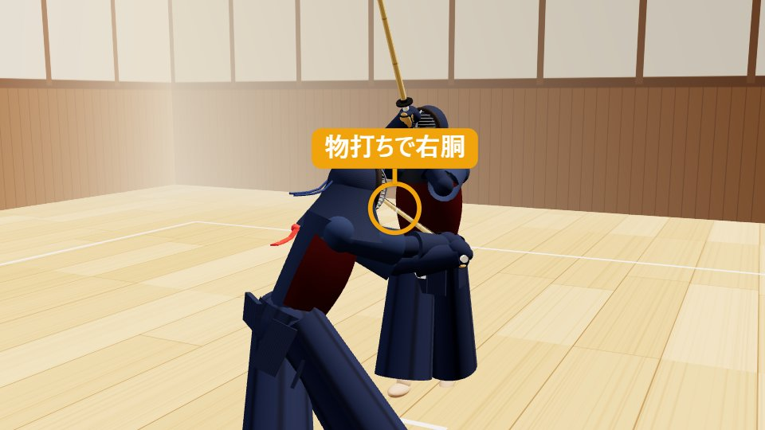
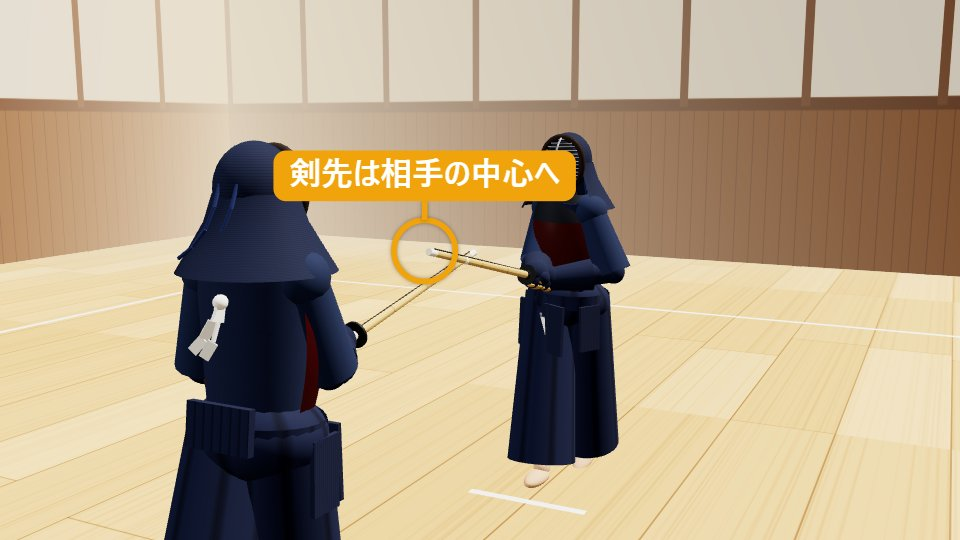

面抜き胴めんぬきどう
面を、かわして、胴を打つ。
1面抜き胴の打ち方（動作）
ドラッグで回転・ホイールで拡大縮小
1構え・攻め合い
一足一刀の間合い。剣先で中心を攻め、相手に面を打たせる。
有効打突チェック — 再生に合わせて点灯します
- 充実した気勢「ドウ」の発声
- 竹刀の打突部物打ちで打つ
- 打突部位右胴
- 刃筋正しく胴に刃筋が通る
- 適正な姿勢低く屈んでも崩れない
- 残心向き直って構える
分解して見る（5コマ）
-

STEP 1
構え・攻め合い
一足一刀の間合いで中段に構え、剣先で相手の中心を攻めます。相手に「打たないとやられる」と思わせ、面を引き出します。
-

STEP 2
相手が面を打つ
相手が攻めに耐えきれず、面を打つために手元を上げ、踏み込んでくる。この瞬間が、応じる機会です。
-

STEP 3
右前へ体をさばく
右足を右前へ踏み出して、体を右へさばきます。相手の面が、自分の体のすぐ脇を通って、空を切る位置に動きます。
-

STEP 4
胴を打つ
面をかわすと同時に、竹刀を振りかぶり、相手の右胴を物打ちで打ちます。「ドウ」と発声します。
-

STEP 5
抜けて残心
打ったら、止まらずに相手の右側（自分の右）へ抜け、振り返って剣先を相手の中心に向けます。
2面抜き胴とは（概要）
面抜き胴（めんぬきどう）は、相手が打ってきた面を、体さばきでかわし（抜き）、空を切った相手の胴を打つ応じ技です。応じ技の中でも代表的な技で、試合でもよく見られます。
応じ技は、ただ待って応じる技ではなく、「打たせて打つ」技です。面抜き胴は、相手が面を打つ瞬間（出ばな）をとらえ、自分の体を右前へさばいて面をかわし、同時に相手の胴を打ちます。
抜く動作と、胴を打つ動作が一つの動きにならないと、面を打たれてしまいます。相手の面を引き出す攻めと、抜きのタイミング、そして胴の刃筋が、すべてそろって初めて一本になります。
- 分類
- 応じ技・抜き技
- 打突部位
- 右胴
- 機会
- 相手が面を打つ瞬間（出ばな）
- 難易度
- ★★☆（中級）
覚えておきたい言葉
3面抜き胴を打つときのコツ（技を出す側） 掛かり手
攻めて、面を引き出す
待って応じようとすると、タイミングが合いません。自分から攻めて、相手に「面を打たなければ」と思わせます。
相手の手元が動いたら、すぐ動く
相手が面を打ち始めてから動くのでは遅れます。手元が上がった、右足が出たなど、起こりに反応して動きます。
大きくさばきすぎない
大きく動くと、相手に動きを読まれ、打突のタイミングも遅れます。相手の面が空を切る程度に、体を右へさばきます。
抜くと同時に打つ
抜いてから胴を打つのではなく、抜く動作の中で胴を打ちます。一つの動きにします。
胴の刃筋を通す
体を右へさばくため、胴の刃筋が通りにくくなります。竹刀の向きを意識して、物打ちで打ちます。
抜けて、振り返る
打ったら止まらずに、相手の右側へ抜けます。ぶつからないよう気をつけながら、抜けた後に振り返ります。
よくある失敗
- 待って応じようとして、相手の面に間に合わない
- 大きくさばきすぎて、胴が打てない
- 抜いてから胴を打ち、タイミングが遅れる
- 胴の刃筋が通らず、ひらで当たる
4受ける側（元立ち）が気にすること 元立ち
面抜き胴の稽古での受ける側（元立ち）は、本気の面を打ち切ることで、抜く側に正しいタイミングと間合いを覚えさせる役です。
本当に面を打つ
打つふりではなく、実際に面を打ちにいく動作をします。形だけの面では、応じる稽古になりません。
面を打ち切る
面をかわされても、最後まで面を打ち切って、そのまま前へ駆け抜けます。途中で止まると、衝突の危険があります。
最初はゆっくり、徐々に速く
最初は大きくゆっくりした面から始め、慣れてきたら小さく速い面にします。
間合いを一定に保つ
一足一刀の間合いから打ちます。遠すぎると届かず、近すぎると窮屈になります。
胴を受ける
胴で受けます。肘や腕を出さないよう気をつけます。
ひと言フィードバック
「抜くのが早い」「ぎりぎりで抜けた」など、面を打った側だから分かる感覚を伝えます。
受ける側の学び：面を打ち切ったあとの胴が空きやすいことが体で分かり、打ったあとの体勢と、抜けるまでの動きの大切さが理解できます。
5面抜き胴が一本になる条件・ならない理由
有効打突は、充実した気勢、適正な姿勢をもって、竹刀の打突部で打突部位を刃筋正しく打突し、残心あるものとする。
剣道試合・審判規則 第12条（全日本剣道連盟）
竹刀が当たっただけでは一本になりません。面抜き胴の場合、6つの条件はそれぞれ次のように見られます。
| 条件 | ○ 一本になる面抜き胴 | × 一本にならない例 |
|---|---|---|
| 充実した気勢 | 「ドウ」の発声が、抜く動作と打突に一致している | 声が小さい・遅れて出す |
| 適正な姿勢 | 体をさばいても上体が崩れず、腰から動いている | 大きく傾く・腰が引ける・逃げているように見える |
| 竹刀の打突部 | 物打ちで打っている | 竹刀の根元や中ほどで当たる |
| 打突部位 | 相手の右胴を打っている | 胴の上端・下端を外れる・肘に当たる |
| 刃筋正しく | 胴の面に斜めに刃筋が通っている | 竹刀の側面（ひら）で当たる・押しつける |
| 残心 | 打った後に抜けて、構え直している | 打った後に止まる・背を向ける |
審判の判定
- 審判は3人（主審1人・副審2人）。2人以上が旗を上げると一本になります。
- 相手の面と同時に当たった場合は、「かわして打った」ことが明確かどうかが判断されます。面が自分に当たっていれば、一本にならないことがあります。
- 逃げるように体をさばき、胴を打つのが遅れた場合は、有効打突と認められにくくなります。
面抜き胴を一本にするコツ
「引き出した」流れが見えると強い
相手が攻めに耐えられず面を打ち、その面を抜いて胴を打つという流れは、審判にも「応じ技が決まった」と伝わります。
抜いたあとの体の向きを整える
抜いた後、胴を打つ体の向きがしっかり相手に向いていると、刃筋が通りやすく、評価されます。
打ち終えたあとも相手に集中
抜けたあとにも、剣先を相手に向けて残心を示します。
観戦のポイント：この3つが見えたら「一本」
- 相手が面を打った瞬間に、体を右へさばいてかわしている
- 面が空を切ったあと、乾いた音の胴が決まっている
- 打った人が抜けたあと、剣先を相手に向けている